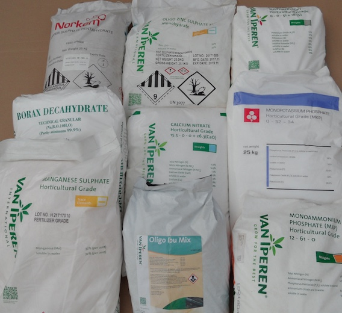

Fertilizers
 Proper fertilizer application gives:
{kind=link}
- Increased yields
- Improves produce quality
- Improves produce shelf-life
- Adds nutrients to the plants that the soil does not supply
- And consequently results in higher income
Method of irrigation affects fertilizer efficiency:
- Fertilizer use with drip irrigation is twice as efficient compared to use with furrow irrigation
For this reason we import 100% water-soluble horticultural grade fertilizers from The Netherlands.
Actually we have the following fertilizers in stock.
| Fertilizer | Chemical composiition | Packing | Weight |
|---|---|---|---|
| Borax | 11% B | Bag | 25 Kg |
| Calcium Carbonate (Agric lime) | 25% CaCO3, 3% MgO | Bag | 50 Kg |
| Calcium Nitrate | 15,5% N, 18,8% Ca | Bag | 25 Kg |
| Chelate Mix | 1,3% B, 0,3% Cu, 7,5% Fe, 3,3% Mn, 0,2% Mo, 1,5% Zn | Bag | 10 Kg |
| Copper Sulphate | 25% Cu | Bag | 25 Kg |
| Magnesium Sulphate (Bittersalt) | 16,5% MgO, 32,5% SO3 | Bag | 25 Kg |
| Manganese Sulphate | 32% Mn | Bag | 25 Kg |
| Mono-Ammonium Phosphate (MAP) | 12% N, 61% P2O5 | Bag | 25 Kg |
| Mono-Potassium Phosphate (MPP) | 34% K2O, 52% P2O5 | Bag | 25 Kg |
| Potassium Nitrate | 13% N, 46% K2O | Bag | 25 Kg |
| Potassium Sulphate (SOP) | 51% K2O, 45% SO3 | Bag | 25 Kg |
| Urea | 46% N | Bag | 25 Kg |
| Zinc Sulphate | 35% Zn | Bag | 25 Kg |
To achieve optimal yield and quality results with your crop fertilization should be based upon a soil analysis and adjusted to the differenct growing stages of the crop, i.e. from transplant till flowering, flowering till first harvest, harvest till end of crop.
Each crop, and even each growing stage of a crop, has its specific requirements on nutrients to achieve maximum yield and quality results.
In the ideal situation the fertilization of your crops should be based upon a soil analysis and adjusted to the different growing stages of the crop, i.e. from transplant till flowering, flowering till first harvest, harvest till end of crop.
The application and mixing of fertilizers correctly demands accuracy and knowledge on how to mix and what can be put together.
Therefore Emmanuel Agro Enterprise Products Ltd. offers prepared complete mixes for each growing stage of the various crops. The mixes will be prepared on request and based on your soil analysis, or in case no soil analysis is available, on the standard nutrient consumption of the crop.
A guideline for application of the mixes will be included.
The mixes will be available in 20 Kg buckets.